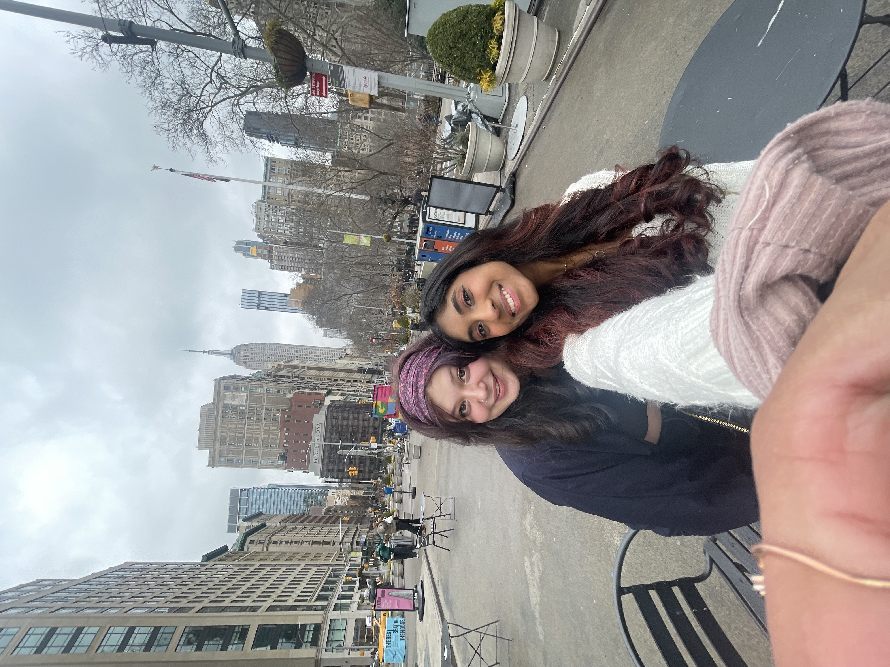

NYC Adventure Trip *written by Chat GPT*
New York City is a city that never sleeps, and it's one of the most vibrant places to visit in the United States. Last week, my best friend Ava and I took a trip to the Big Apple to explore different shops and bookstores. It was a thrilling adventure that was full of surprises. We arrived in New York on Friday night, and immediately headed to my house in Long Island. We had a lovely dinner with my family and then got to bed because we were catching an early train to the city. Unfortunately, our day did not start off on the right foot. Ava and I had both slept in and we missed our original 9:50am train. Luckily, we were able to catch the next one and we got to the city by 11am. After arriving, we set out on foot to explore the city. Our first stop was Harry Potter New York located in the heart of Manhattan. As a lifelong fan of the Harry Potter series, I was beyond excited to explore the store and immerse myself in the magical world of Hogwarts. As lifelong fans of the Harry Potter series, we were beyond excited to explore the store and immerse myself in the magical world of Hogwarts. The first floor was dedicated to merchandise, and I couldn't believe the range of items available. I even saw a replica of the Golden Snitch that looked like it had just flown off the Quidditch pitch! As I made my way to the second floor, I was greeted by a life-size replica of Hagrid's motorcycle and a giant, moving model of Fawkes, Dumbledore's phoenix. The second floor was where the magic really began. The walls were lined with interactive screens, where I could cast spells. I felt like a real wizard as I flicked my wand and made feathers fly and flowers bloom. The third floor was where I found the most exclusive items. The Harry Potter New York store has its own Ollivander's wand shop, where visitors can purchase personalized wands. The store also had a Butterbeer bar, where visitors can enjoy the famous wizarding drink. Ava and I shared a cold Butterbeer, and it was the perfect sweet and creamy treat to cap off the visit. Our next stop was the famous Strand Bookstore in Union Square. The Strand is a must-visit destination for any book lover, and we were excited to see what treasures we would find. As soon as we walked in, we were overwhelmed by the sheer number of books on display. The Strand is known for its extensive collection of rare and out-of-print books, as well as its selection of new releases. We spent several hours in the Strand, exploring each of its floors and combing through the stacks of books. We found some amazing books, and Strand merch including beanies and sweatshirts. Ava bought a dark green beanie that says Strand Bookstore on it! Then we rushed from Strand to our lunch reservation Mono + Mono, a Korean fried chicken restaurant in the East Village of New York City. The restaurant is known for its unique concept, which combines delicious food with a massive collection of vintage jazz vinyl records. As soon as we entered the restaurant, we were struck by the ambiance. The walls were lined with shelves upon shelves of records, and the sound of jazz music filled the air. Mono + Mono specializes in Korean fried chicken, which is known for its crispy skin and juicy meat. Ava and I ordered a half-and-half combo, which allowed us to try two different flavors of chicken. When the chicken arrived, it did not disappoint. The skin was perfectly crispy, and the meat was tender and juicy. I particularly enjoyed the soy garlic flavor, which had just the right amount of sweetness and spice. The chicken was served with a side of pickled radishes and a creamy dipping sauce that complemented the flavors of the chicken perfectly. Then, we hopped on the subway to get to our other destinations of the afternoon: The New York Public Library and the Albertine Bookstore. The New York Public Library, located in midtown Manhattan, is one of the largest public libraries in the world. As I walked into the library's grand entrance, I was struck by the beauty of the Beaux-Arts architecture and the grand marble staircase leading up to the main reading room. Inside, I explored the library's extensive collection of books and exhibits, which included rare manuscripts, first editions, and original artwork. I spent hours browsing the shelves and immersing myself in the world of literature. After leaving the library, we headed to the Albertine Bookstore, located on the Upper East Side. This charming French bookstore is the perfect place to escape into the world of French literature. The store offers a wide selection of books in French, as well as translations in English. The atmosphere of the store was warm and inviting, with cozy seating areas and a peaceful ambiance. I spent time perusing the shelves, discovering new authors and old favorites, and engaging in conversations with the knowledgeable staff. As the day began to wind down, we headed to a restaurant in the Upper East Side for dinner. As we arrived at Serafina 79, we were immediately struck by the warm and inviting ambiance. The decor was tastefully done, with a mix of contemporary and traditional Italian elements. I ordered a spaghetti carbonara, which was delicious. Our adventure in New York City had come to an end, and we were sad to leave. We had explored some amazing bookstores and tasted some delicious food. We had seen a different side of the city, one that was full of creativity and diversity. As we headed back home, we felt grateful for the opportunity to explore New York City and experience its vibrant culture. We couldn't wait to come back and do it all over again.